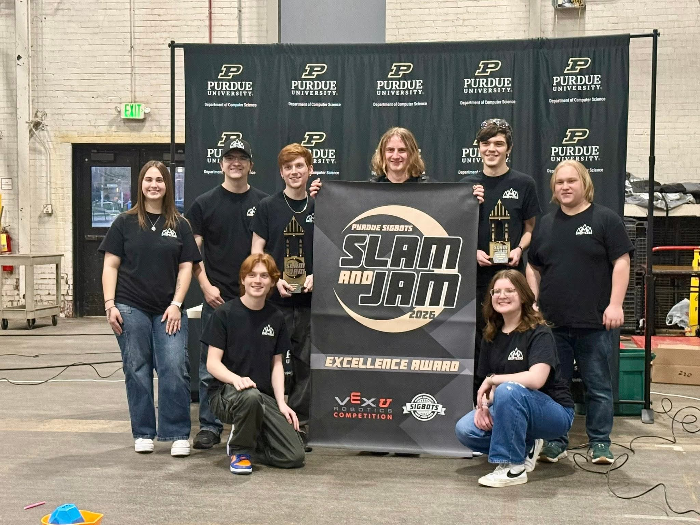
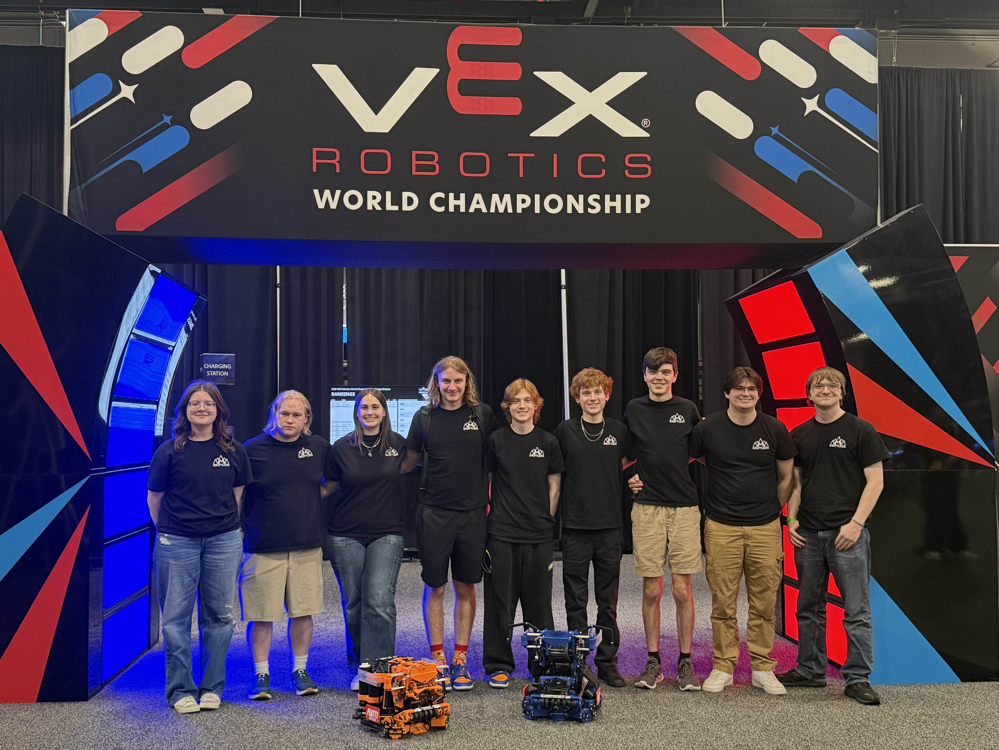
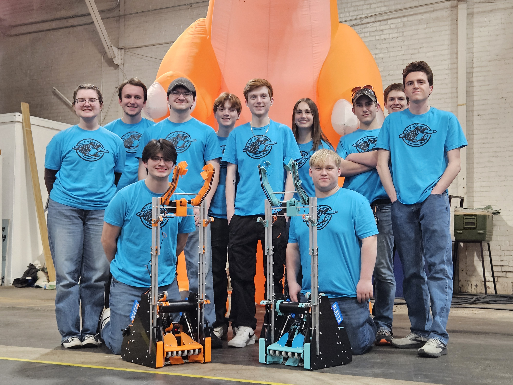
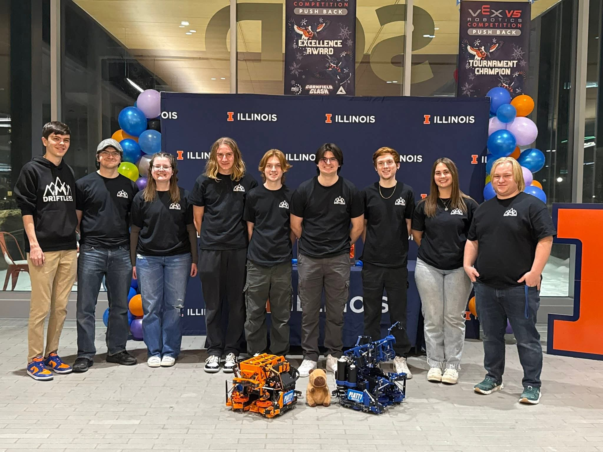
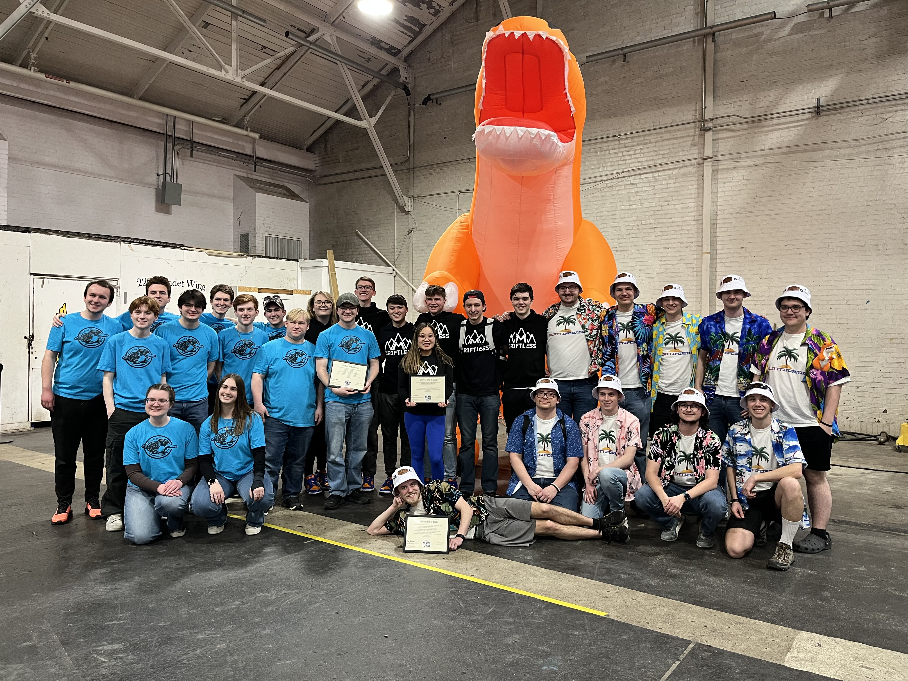
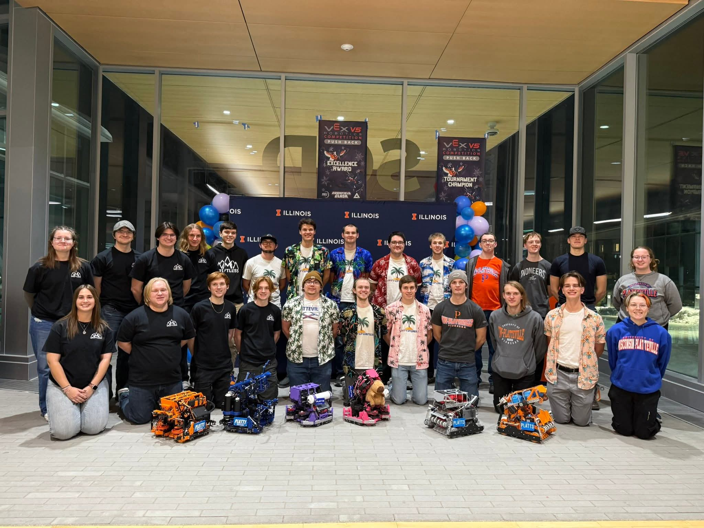
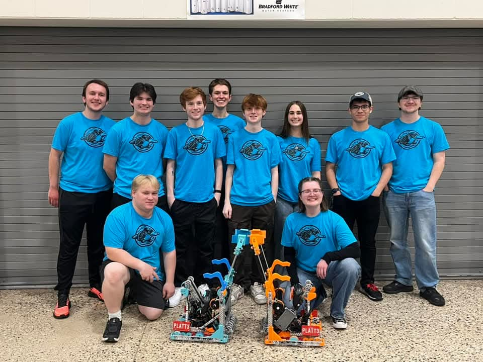

Extracurricular Activities
My involvement outside the classroom has helped me develop leadership, teamwork, communication, and hands-on technical skills that give more exposure to real-world applications of electrical engineering.
Pioneer Robotics (VEX U)
Member · VEX U Coordinator
Through Pioneer Robotics, I work on designing, building, and testing competition robots for VEX U competitions. My focus has included integrating a optical odometry sensor, designing and soldering electronic components, and documenting the design process.
- Designed and built robots for national and international competitions, winning awards at several events including the VEX U World Championship
- Soldered and tested custom sensors for odometry
- Coordinated multiple teams, managed competition logistics and communicated with club members as VEX U Coordinator and secretary










Marching Pioneers
Member
As a member of the Marching Pioneers, I balance my coursework with rehearsals, performances, and travel. This experience has strengthened my dedication, time management, and collaboration skills.
- Performed at university and outside events, including at a Green Bay Packers game, a Brewers game, and Galena Halloween Parade
- Worked closely with a large ensemble of over 170 musicians in a fast-paced environment
- Developed strong time management and teamwork skills
Society of Women Engineers (SWE)
Member · Chair
Through SWE, I support outreach initiatives and events that encourage young women to pursue STEM careers, as well as connect with other women actively pursuing degrees in STEM. I have also gained experience in communication, budgeting, and event planning.
- Planned and budgeted STEM outreach events for high school students
- Collaborated with faculty and student organizations
- Promoted inclusivity and professional development in engineering